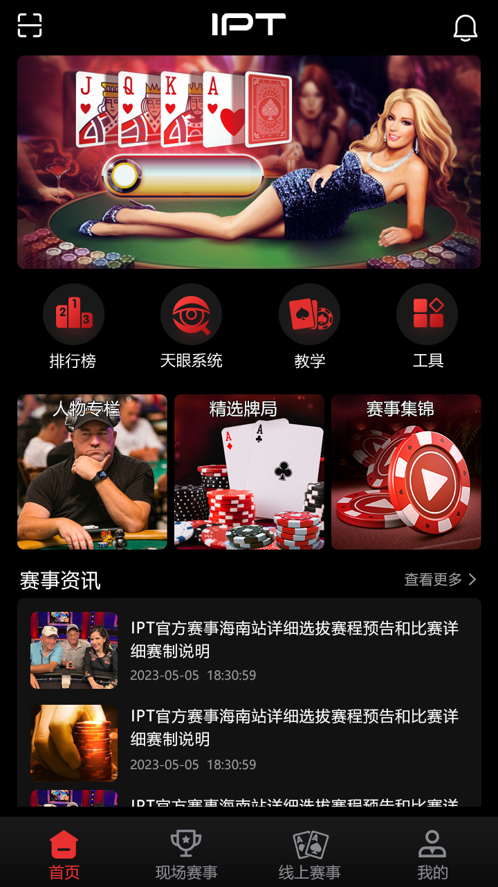
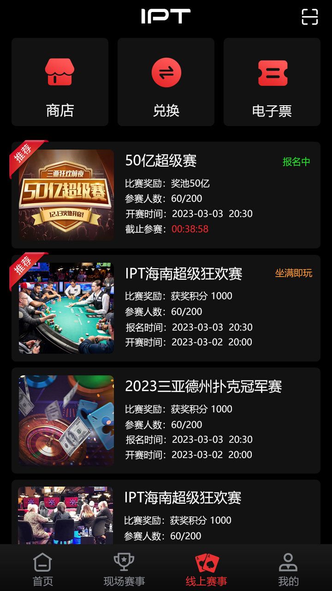
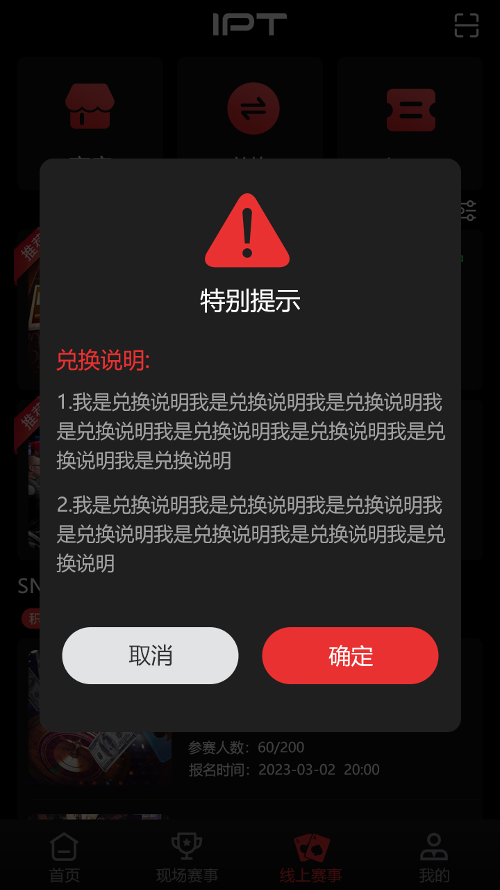
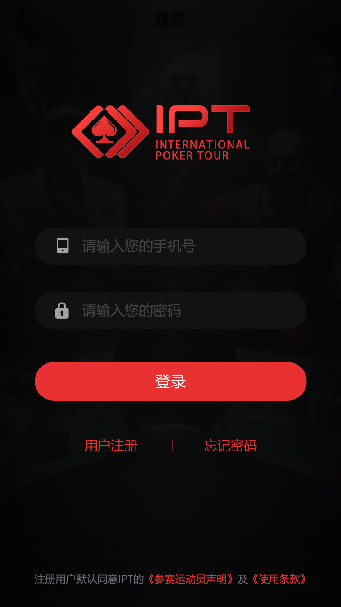
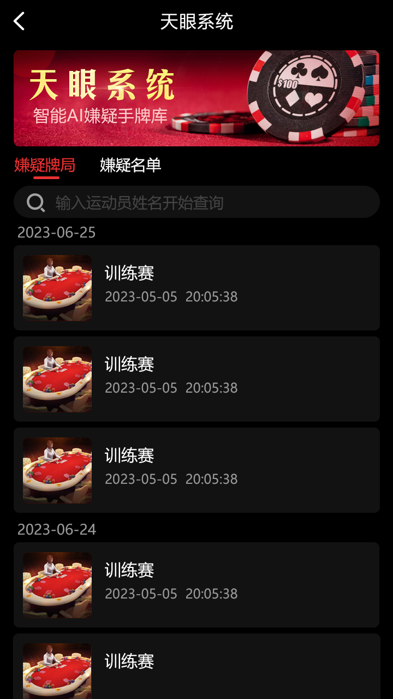

赛事发现
首页和线上赛事列表提供比赛及资格赛入口。
项目把线上赛事界面和牌桌技术资源放在同一仓库：玩家侧可浏览比赛、进入报名和权益兑换；代码侧提供房间用户状态、开局、计时、庄家、结束以及 Unity 表现资源。
首页和线上赛事列表提供比赛及资格赛入口。
查看比赛条件并进入报名或参赛权益兑换。
房间配置、用户入座/离线、开局检查、计时和结束接口。
从首页进入线上比赛。
查看条件并取得参赛权益。
配置牌桌、入座并等待开局。
计时器驱动阶段并广播状态。








| 层级 | 仓库可核验内容 |
|---|---|
| 服务端 | C++ 房间/牌桌逻辑、GMServer、玩家状态和计时器 |
| 框架/通信 | Tars Application、公共协议与 Protobuf 消息 |
| 数据 | Tars MySQL 客户端和配置读取 |
| 客户端资源 | Unity C#、牌型 PNG/Atlas/JSON、滚动及音频组件 |
Makefile 依赖多个仓库外的 `/home/tarsproto/XGame/` 模块。完整构建前必须补齐协议、服务、配置与数据库；当前文件不能证明酒店预订后台或可直接上架。